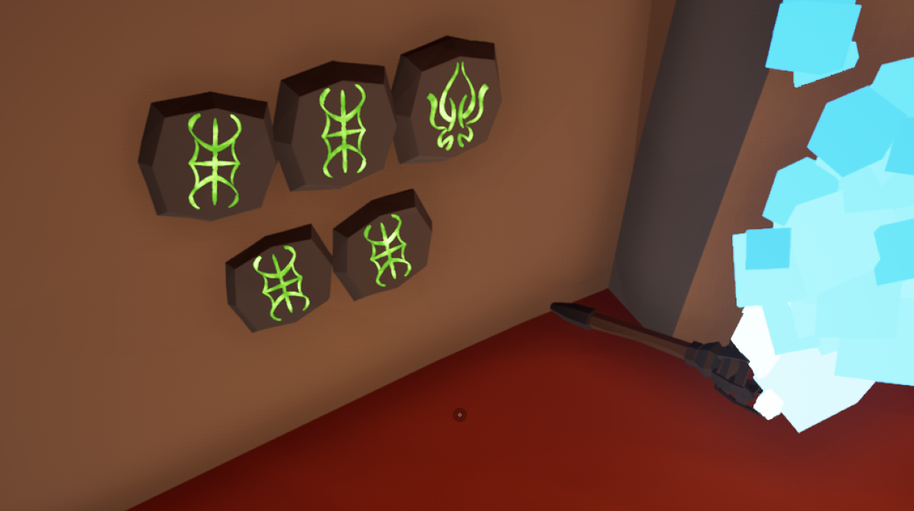
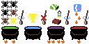

THE RECIPE HAS BEEN FOUND
Step 1
- Heat: 2
- Add: 3 normal spiders, 2 jumping spiders, 1 web
- Action: Stir
Step 2
- Heat: 0
- Add: golden trophy (Requires finishing the game at least once)
- Action: Don’t stir
Step 3
- Heat: 4
- Add: bullet ammo, fire ammo, heavy ammo
- Action: Stir
Step 4
- Heat: 1
- Add: 3 nuke puff
- Action: Stir
What we know so far
There are 12 locations where runes can spawn, shown below :

Bringing a blue torch to those spot will reveal symbols (The number of and symbols are random per player), some of
which will be colored

Each Symbol corresponds to a number, delimited by the number of bump on that seal in the portal in front of the
spider god's door, as shown below :

With this in mind, each colored rune is actually an X/Y coordinate and a color :

The current theory is that by plotting these symbols, we can get an image that will help us unlock the "Cheat Code"
item
Kill it With Fire 2 Mosaic
This event has now been solved, below are the community's final mosaic, along with the full solution
Community Solution

Full Solution
